Introduction
In the projects weeks of Development I and my team have been working on the development marketing solution of our last media campaign with the client of Handpicked. The solution our client wanted to see based on our last presentation was a social media platform where users could post there own things of Breda, so it automatically generates traffic because of the posts.
LO1 – Interactive media products
For a interactive prototype I've chosen for figma, since figma is one the biggest right now and in this prototype I tried to aim to have a good understanding how the end product looks like, by using the navigation prototype tool
I've learned how to implent easy navigation tools and u can change settings such as setting variables, links, animations and much more in figma.
 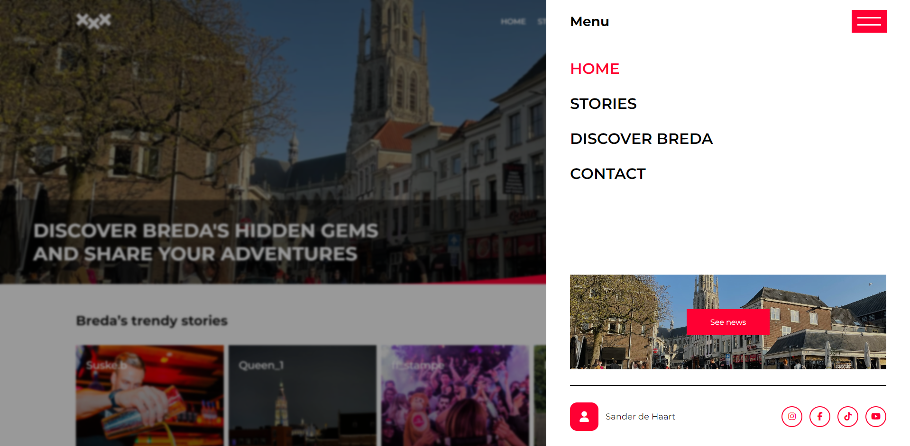
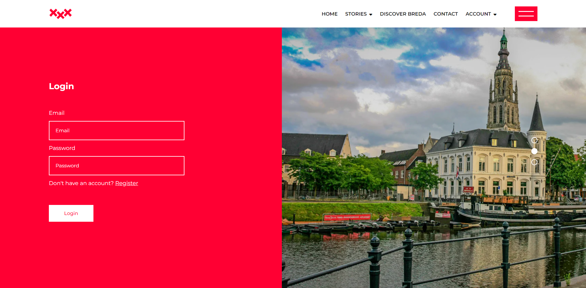
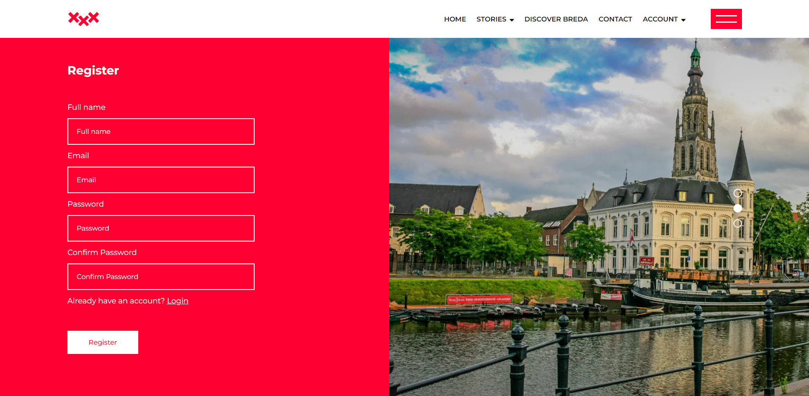
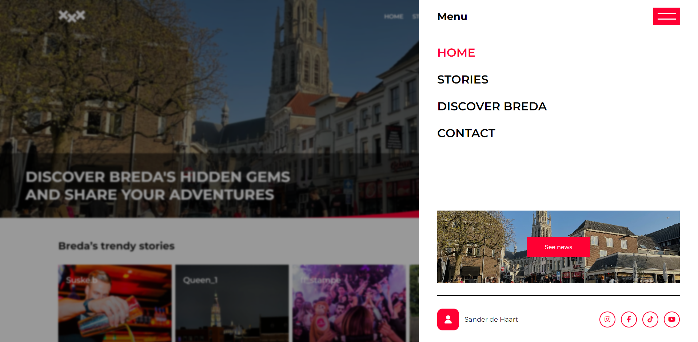
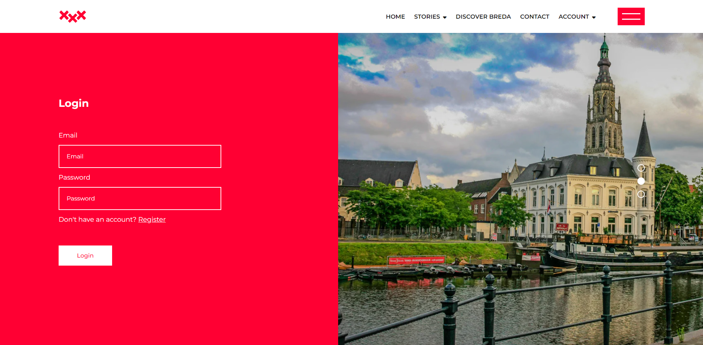
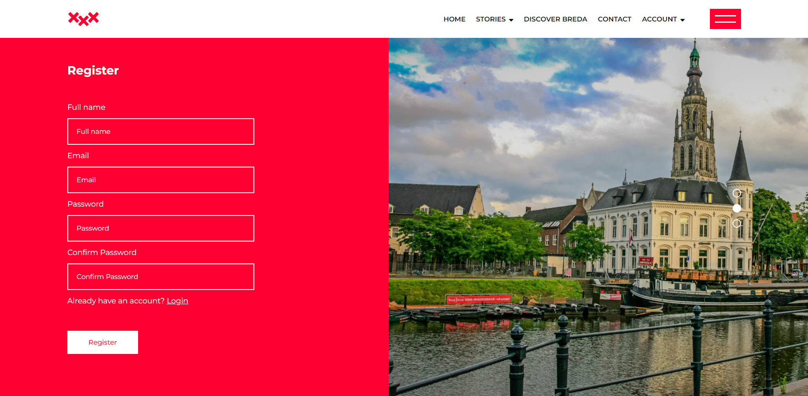
Testing
As last we tested our prototype in figma based on our target audience from our media campaign. So I asked 8 testers to check our product navigation, if there are any wrong things in our product.
The conclusion of the interview was that there was 1 problem with finding the upload page.
LO2 – Development & version control
To have a well structured coding setup, I managed to setup some global settings and started from there the coding process, so everyone in my group had easy accesible variables.
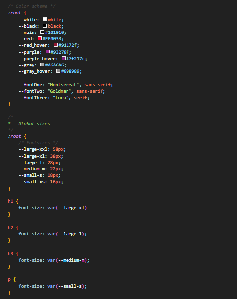 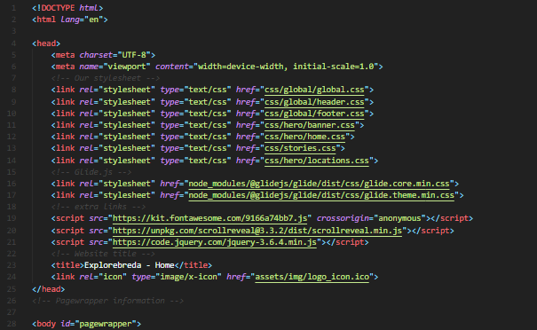I myself coded the header, footer, menu, register, login & the homepage layout. The process of that went well, because the task was to follow the design and I completely copied the design exactly how it was expected and that was a really nice achievement. Also I managed to make every thing I made mobile repsonsive.
Also to make a couple things actualy work such as menu and the account creation i've used Javascript. For the account registration I had to setup a firebaseconfig and working firebase settings. Both things went very well because I already had experience with both things, so i knew where to start. I've learned how setup these things much faster and know the settings of firebase database authentication much better now. And as last how to work with cookies to save some data for the website, in this case with the user authentication.
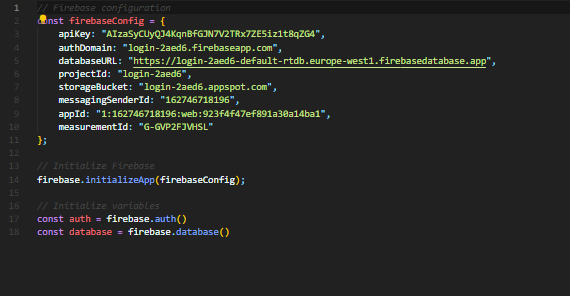 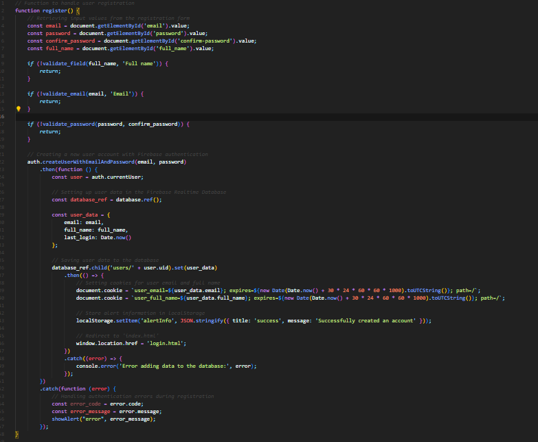 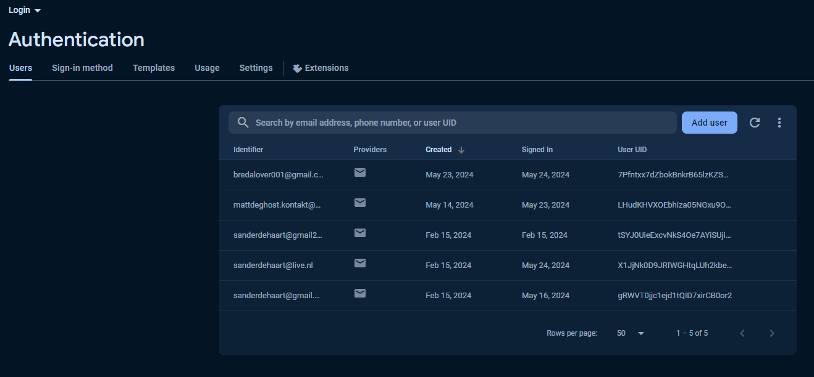Version control
In this project I've worked with GitHub with my team. We made use of all standard tools such as commit, merge & pull. Also we worked this time with branches and everyone worked on there own branch and commit there things and in the end merged there coding into the main.
I myself learned how to work with branches in a group and also to solve mistakes if there happens any with merging.
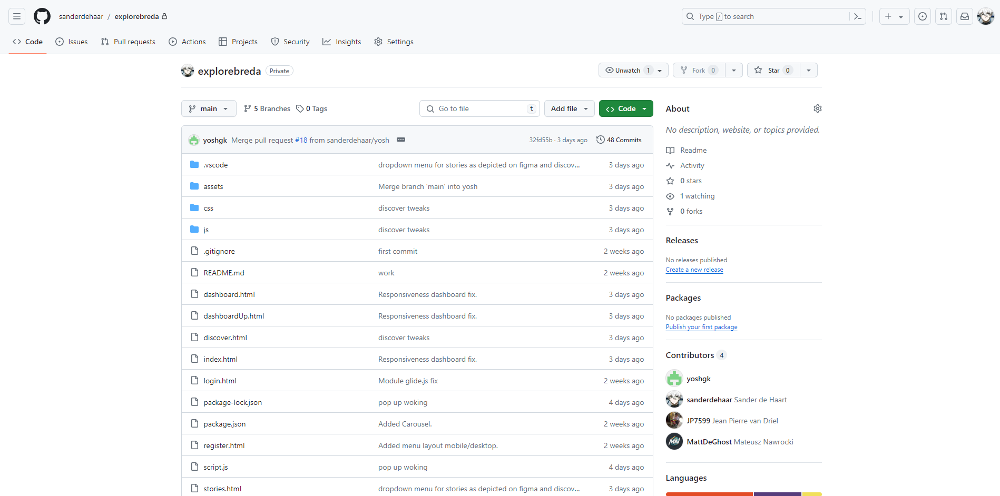LO3 – Iterative design
Based on our low fidelity homepage I came out with a iteration. I've asked feedback on that and the conclusion of that was that the hero section of the map background was not correct and The map should be a photo our more appealing. Also I should make the homepage design less standard with text from top to bottom and as last the cards with the lines felt a bit off, because its not used in through the whole design.
For the second iteration I managed to create a more appealing homepage by using the left to right text and I made the cards look different, more connecting through the whole design. Also I updated the map with a photo and removed the gray background, so the design is consistent. I myself have chosen to remove the mobile mockup, because of a small interview in between with people and it was a bit distracting, because the product is not only ment for mobile use.
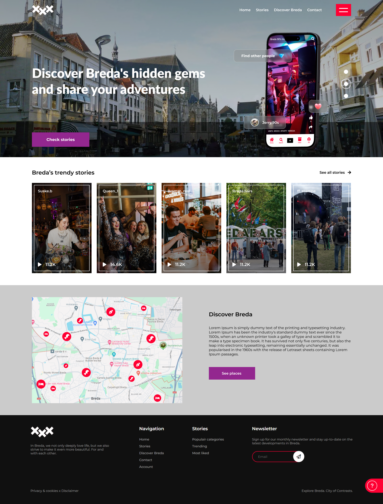
For the login/register we had feedback that is was a bit to plain and I should add some images to make it come more alive and I should also be careful with the positioning of objects.
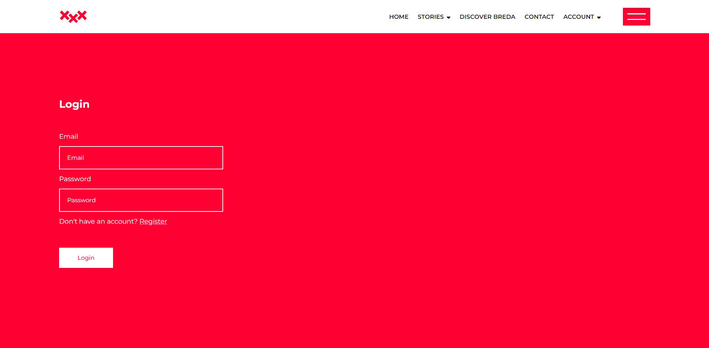For the second itteration I used imagery to make it more represent Breda and have the experience of explorebreda through the whole process of creating a account. I've gotten feedback that the lines between the images are not combining well.
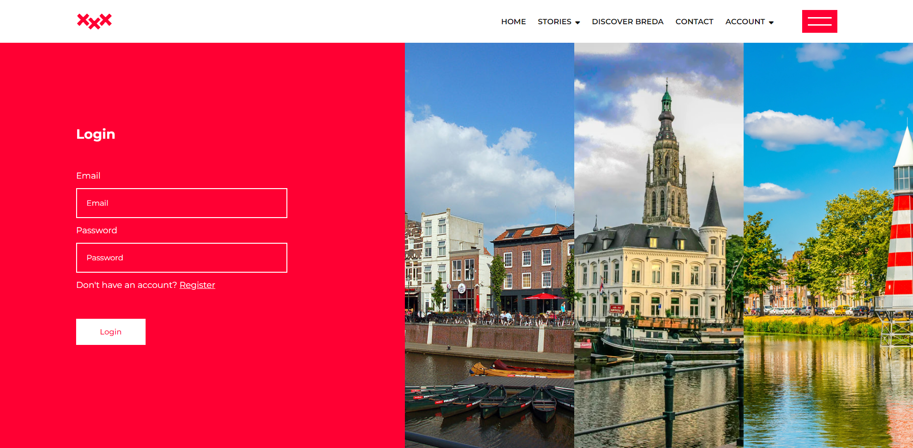As last I changed the imagery to 1 image and have option for a slider, so it fits the experience of explorebreda and u see different images per 5 seconds.
LO4 – Professional standard
For a nice project organisation I took the lead in setting up our development environment. So I gave my group members all a lesson about how gitHub works and how branches are working, so we could easily work together through the whole development project.
Because of my experience in working a real programming environment as my sidejob I took the lead to create a setup for all members to make there work more easier, for example setting up variables and folders. Also because I know my project members there skills, I took the iniative to make our group members there part of the project mobile responsive, since that is a big requirement in developing a end product.
By doing these things I managed to find our groups weaknesses and put my own strenghts there to have a smooth collaboration in the end. This has helped us with our time management, our communication & work environment.
LO5 – Personal leadership
I've learned that self reflection and asking feedback is needed to have growth, because without these things there is no way you can improve your product and this means that in real life your product will be desliked or canceled by your client, because you lacked by asking feedback within the group.
So for next time really understand your group members there strenghts and weaknesses so everyone in your group is able to grow and in reallife this would mean efficiency and even time costs, because of the time your spending.
I think others view me as hard working programmer and I always try to learn new things and that will be really helpful when I am working as a front-developer in the future, because programming knowledge never stops to change or grow. For the future I should try to ask the people around me what my weaknesses are and try to improve those skills.